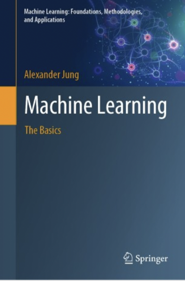
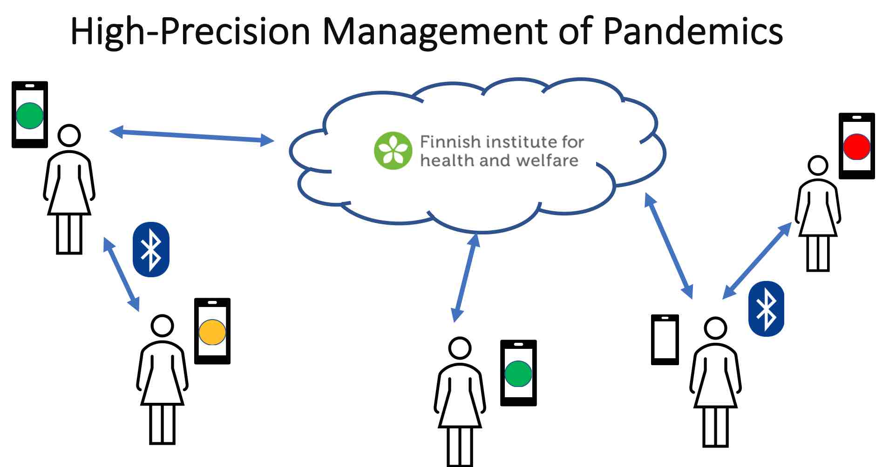
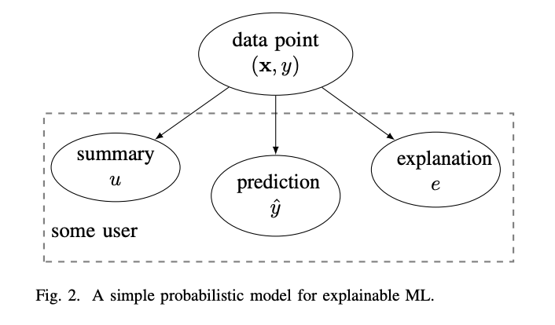
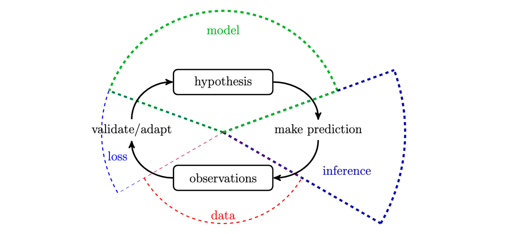

Alexander Jung
|  |
|
About Me
I hold Dipl.-Ing. (MSc) and Dr.techn. (PhD) degrees in electrical engineering and signal processing from TU Vienna, conferred in 2008 and 2012 respectively. As a tenured Associate Professor for Machine Learning I lead the “Machine Learning for Big Data” group at the Department of Computer Science of Aalto University (Finland). Our current research focus is on the mathematical underpinnings of trustworthy artificial intelligence. We study fundamental limits and efficient algorithms for explainable machine learning from decentralized and heterogenous data. Such data arises in several important application domains such as numerical weather prediction, renewable energy networks, city planning, and condition monitoring for electric machines.
Updates
We have developed a novel federated learning method that allows to train arbitrary collections of personal models from local datasets related by a similarity graph. The method has been presented at the conference EUSIPCO 2023:
A. Jung, S. Abdurakhmanova, O. Kuznetsova and Y. Sarcheshmehpour, “Towards Model-Agnostic Federated Learning over Networks,” 31st European Signal Processing Conference (EUSIPCO), Helsinki, Finland, 2023, pp. 1614-1618, doi: 10.23919/EUSIPCO58844.2023.10290116.preprint
Master Thesis in Machine Learning - Some Guidance
Access a comprehensive starter kit tailored for master thesis workers here.
Dive into insightful recordings of our group meetings on my YouTube channel Playlist.
Computational and Statistical Aspects of Total Variation Minimization for Federated Learning
 Many important application domains generate collections of local datasets that are
related by an intrinsic network structure (“big data over networks”). A timely application domain that generates such big data over networks
is the management of pandemics. Individuals generate local datasets via their smartphones and wearables that measure biophysical
parameters. The statistical properties of local datasets are related via different network structures that reflect physical (“contact networks”),
social or biological proximity. In general, local datasets are heterogeneous in the sense of having different statistical distributions.
However, we can often approximate local datasets that form a tight-knit cluster by a common cluster-specific distribution.
To capitalize on the information in local datasets and their network structure, we have recently proposed networked exponential families as a novel probabilistic model for big data over networks. Networked exponential families are appealing statistically and computationally. They allow us to adaptively pool local datasets with similar statistical properties as training sets to learn personalized predictions tailored to each local dataset. We can compute these personalized predictions using highly scalable distributed convex optimization methods. These methods are robust against various types of imperfections (statistically and computationally) and typically offer a high level of privacy protection.
Relevant Publications:
A. Jung, “On the Duality Between Network Flows and Network Lasso,” in IEEE Signal Processing Letters, vol. 27, pp. 940-944, 2020, doi: 10.1109/LSP.2020.2998400.
A. Jung, “Networked Exponential Families for Big Data Over Networks,” in IEEE Access, vol. 8, pp. 202897-202909, 2020, doi: 10.1109/ACCESS.2020.3033817.
A. Jung, A. O. Hero, III, A. C. Mara, S. Jahromi, A. Heimowitz and Y. C. Eldar, “Semi-Supervised Learning in Network-Structured Data via Total Variation Minimization,” in IEEE Transactions on Signal Processing, vol. 67, no. 24, pp. 6256-6269, Dec., 2019, doi: 10.1109/TSP.2019.2953593.
A. Jung and N. Tran, “Localized Linear Regression in Networked Data,” in IEEE Signal Processing Letters, vol. 26, no. 7, pp. 1090-1094, July 2019, doi: 10.1109/LSP.2019.2918933.
Explainable AI (XAI)
 Current AI systems make heavy use of machine learning. A key challenge for the widespread use of machine learning methods is the explainability of their predictions. We have recently developed a novel approach to constructing personalized explanations for the predictions delivered by machine learning method. We measure the effect of an explanation by the reduction in the conditional entropy of the prediction given the summary that a particular user associates with data points. The user summary is used to characterise the background knowledge of the “explainee” in order to compute explanations that are tailored for her. To compute the explanations our method only requires some training samples that consists of data points and their corresponding predictions and user summaries. Thus, our method is model agnostic and can be used to compute explanations for different machine learning methods.
Relevant Publications:
L. Zhang, G. Karakasidis, A. Odnoblyudova, et al. Explainable empirical risk minimization. Neural Comput & Applic 36, 3983–3996 (2024). link
A. Jung and P. H. J. Nardelli, “An Information-Theoretic Approach to Personalized Explainable Machine Learning,” in IEEE Signal Processing Letters, vol. 27, pp. 825-829, 2020, doi: 10.1109/LSP.2020.2993176.
Teaching Highlight: Student Feedback-Driven Course Development
 Right from my start at Aalto in 2015, I took care of the main machine learning courses at Aalto University. Within three years I have re-designed the spearhead course Machine Learning: Basic Principles (MLBP). This re-design was based on a careful analysis of feedback received from several thousands of students. I have also started to prepare response letters to the student feedback, as it is customary in the review process of scientific journals. My final edition of MLBP in 2018 has achieved the best student rating since the course was established at Aalto. The efforts have also been acknowledged by the Teacher of the Year award, which I have received in 2018 from the Department of Computer Science at Aalto University.
Teaching Highlight: A Three-Component Picture of Machine Learning
Machine learning methods have been and are currently popularized in virtually any field of science and technology. As a result, machine learning courses attract students from different study programs. Thus, a key challenge in teaching basic machine learning courses is the heterogeneity of student backgrounds. To cope with this challenge, I have developed a new teaching concept for machine learning. This teaching concept revolves around three main components of machine learning: data, models and loss functions. By decomposing every machine learning methods into specific design choices for data representation, model and loss function, students learn to navigate the vast landscape of machine learning methods and applications. The three-component picture of machine learning is the main subject of my textbook Machine Learning: The Basics.